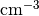
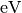
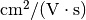
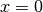
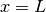

3.1. Tutorial 1: I-V curve of a one-dimensional pn homojunction¶
In this tutorial we show how to build a simple one-dimensional  homojunction and compute its I-V curve. In this and other tutorials we assume a rudimentary knowledge of python (e.g. basic syntax, function definition, etc.) and numpy (e.g. array declarations).
homojunction and compute its I-V curve. In this and other tutorials we assume a rudimentary knowledge of python (e.g. basic syntax, function definition, etc.) and numpy (e.g. array declarations).
See also
The example treated here is in the file 1d_homojunction.py located in the
examples\tutorial1 directory of the distribution. The same simulation’s GUI input file is 1d_homojunction.ini, also located in the examples\tutorial1 directory.
The 1-dimensional homojunction band diagram under short-circuit conditions is shown below.
3.1.1. A word for Matlab users¶
Sesame uses the Python3 language and the scientific libraries Numpy and Scipy. A documentation on the similarities and differences between Matlab and Numpy/Scipy can be found here.
3.1.2. Constructing a mesh and building the system¶
We start by importing the sesame and numpy packages:
import sesame
import numpy as np
Choosing a good mesh is a crucial step in performing the simulation. An overly coarse mesh will give inaccurate results, while an excessively fine mesh will make the simulation slow. The best mesh for most systems is nonuniform: being highly refined in regions where the solution changes rapidly, and coarse in regions where the solution varies slowly. After the tutorials the user should have a sense of how to construct an appropriate mesh. In this example, we create a mesh which contains more sites in the pn junction depletion region:
L = 3e-4 # length of the system in the x-direction [cm]
x = np.concatenate((np.linspace(0,1.2e-4, 100, endpoint=False), # depletion region
np.linspace(1.2e-4, L, 50))) # neutral region
Note
Sesame assumes all quantities of length are input in units of cm. Other assumed input units are: time in s, energy in eV.
To make a system we use Sesame’s Builder() class. The input to Builder() are grids along the different dimensions of the simulation. For a 1-dimensional simulation, we provide only the x grid as input. Builder() returns an object sys which contains all the information needed to describe the simulation. Additional simulation settings will be set by calling various methods of sys:
sys = sesame.Builder(x)
3.1.3. Adding material properties¶
Next we add a material to our system. A material is defined using a python dictionary object, which is added to the system using the add_material() method of sys:
material = {'Nc':8e17, 'Nv':1.8e19, 'Eg':1.5, 'affinity':3.9, 'epsilon':9.4,
'mu_e':100, 'mu_h':100, 'Et':0, 'tau_e':10e-9, 'tau_h':10e-9, 'Et':0}
sys.add_material(material)
Here Nc (Nv) is the effective density of states of the conduction
(valence) band (), Eg is the material band gap
(), epsilon is the material’s dielectric constant,
mu_e (mu_h) is the electron (hole) mobility (), Et is the energy level of the bulk recombination defect, as measured from the intrinsic energy level, and tau_e (tau_h) is the electron (hole) bulk lifetime (). For the full list of material parameters available, see the documentation of the method
add_material().
3.1.4. Adding dopants¶
Let’s add dopants to make a pn junction. This requires specifying the
regions containing each type of dopant, which is done by using a python function. Here’s an example: let’s suppose the n-type region is between x=0 and x=50 nm. We write a function which returns a value of True when the input pos belongs to this region, and False otherwise:
junction = 50e-7 # extent of the junction from the left contact [cm]
def n_region(pos):
x = pos
return x < junction
We add donors by calling the sys method add_donor(), whose input arguments are the donor concentration (in units ), and the function defining the doped region (n_region for this example)
# Add the donors
nD = 1e17 # [cm^-3]
sys.add_donor(nD, n_region)
Similarly, we add acceptors by defining a function p_region to specify the p-type region, and add it to the system with the add_acceptor() method:
def p_region(pos):
x = pos
return x >= junction
# Add the acceptors
nA = 1e15 # [cm^-3]
sys.add_acceptor(nA, p_region)
Note
The lambda keyword provides a more efficient way to define simple functions with python. For example, the p_region function can be defined in the single line: p_region = lambda x: x<=junction. See python documentation for more details on defining “anonymous functions” using lambda.
3.1.5. Specifying contact types¶
Next we need to specify the
contact boundary conditions. For this example, we’ll use selective Ohmic contacts. We first specify contact type with the sys method contact_type(), which takes two input arguments: the contact type at  (“left” contact), and the contact type at  (“right” contact). Note that the order of arguments matters: the right contact type is the first agument, the left contact type is the second argument. Then we’ll specify the recombination velocities for electrons and holes at left and right contacts with the sys method contact_S(). Again, the order of the input to contact_S() should be as shown below:
# Define Ohmic contacts
sys.contact_type('Ohmic', 'Ohmic')
# Define the surface recombination velocities for electrons and holes [cm/s]
Sn_left, Sp_left, Sn_right, Sp_right = 1e7, 0, 0, 1e7 # cm/s
sys.contact_S(Sn_left, Sp_left, Sn_right, Sp_right)
3.1.6. Computing an I-V curve¶
We’ve finished defining the system. Before computing the system response to illumination and applied voltage, it’s necessary to first solve the equilibrium system. This is done with the command solve_equilibrium(), which returns the equilibrium solution
# First find the equilibrium solution
eqsolution = sesame.solve_equilibrium(sys)
To compute an I-V curve under illumination, we specify the generation profile with a function. For this example, we use an exponentially varying generation profile defined in the function gfcn:
phi = 1e17 # photon flux [1/(cm^2 s)]
alpha = 2.3e4 # absorption coefficient [1/cm]
# Define a function for the generation rate
def gfcn(x):
return phi * alpha * np.exp(-alpha * x)
Adding the illumination profile to the simulation is accomplished with the sys method generation(), which takes the function we’ve defined as input:
sys.generation(gfcn)
Finally we compute the I-V curve under illumination. We do this with the sesame method IVcurve(), whose the input arguments are the system object sys, an array of applied voltage values, the equilibrium solution we just computed, and a string which is the seedname for the output files.:
voltages = np.linspace(0, 0.95, 40)
j = sesame.IVcurve(sys, voltages, eqsolution, '1dhomo_V')
j = j * sys.scaling.current
Note
The IVcurve method returns the dimensionless current. We convert it to dimension-ful form by multiplying by the constant sys.scaling.current.
The output data files will have names like 1dhomo_V_0.gzip where the number 0
labels the the voltages array index. These data files contain all the information about the simulation settings and solution. tutorial 4 discusses how to access and plot this detailed data.
3.1.7. Saving and plotting the I-V curve¶
In this section we show different ways to save the computed current and voltage values.
First we store the data we wish to save in a dictionary object:
result = {'v':voltages, 'j':j}
Then we use the numpy function save to save the data as a numpy array. The first argument is the filename for the saved data (note the file will receive a .npy extension), the second argument is the dictionary to save:
np.save('jv_values', result)
The data dictionary can subsequently be loaded with the command:
result = np.load("jv_values.npy").
We can also save the data in a simple ascii file with the command:
np.savetxt('jv_values.txt', (v, j))
An alternative is to save the data in a Matlab-readable .mat file. This is accomplished with the function savemat in the scipy library:
import scipy.io.savemat as savemat
savemat('jv_values.mat', result)
Note
In the tutorial script, we’ve added commands to check if the scipy library is installed. We omit these commands in this tutorial for the sake of clarity.
The library Matplotlib is commonly used for plotting in python. The code for generating a simple current-voltage plot is shown below:
import matplotlib.pyplot as plt
plt.plot(voltages, j, '-o')
plt.xlabel('Voltage [V]')
plt.ylabel('Current [A/cm^2]')
plt.grid() # add grid
plt.show() # show the plot on the screen
We discuss loading and plotting results in Tutorial 4. As a preview, we show the code used to generate the band diagram we showed at the beginning of this tutorial:
sys, result = sesame.load_sim('1dhomo_V_0.gzip') # load data file
az = sesame.Analyzer(sys,result) # get Sesame analyzer object
p1 = (0,0)
p2 = (3e-4,0)
az.band_diagram((p1,p2)) # plot band diagram along line from p1 to p2